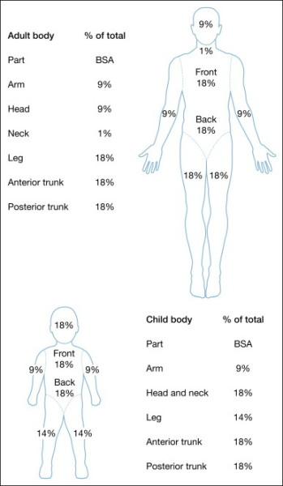
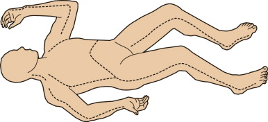

Jerome's Notes
Burns
temperatures
>40°C cause
skin burns
Aetiology
Depth
· Location
— Thick vs thin
skin
· Temp @ location
· Duration of
exposure
Type
1.
Thermal
2.
Electrical
Electrical flash
burns: There is no conduction of current and so
superficial burns
Contact burns due to ignition of
clothing
Conductive burns due to passage of
current from entry to exit point
The injury is determined by voltage, type of
current and path of current.
The
damage is the result of differential tissue resistance. Skin has
low resistance and so relatively little damage. Underlying
muscle, bone, nerve and vessels have much greater resistance and
so damage.
· Areas of injury
— Nervous system
Immediate LOC, peripheral & spinal cord
paralysis
Delayed Can take up to 3 yrs to evolve
Seizures, paralysis, headaches, depression,
transverse myelitis, aphasia
— Bone
# 2° to tetanic contraction / falls
— Muscles & vessel
Muscle damage & necrosis
Rhabdomyolysis ± ATN
Compartment syndrome
Vessel thrombosis ® delayed necrosis
(up to 10/7)
— Cardiopulmonary
Arrest Cardiac & respiratory (brain stem)
Arrythmia
Myocardial damage need 11-30,000 V
— Ocular
Cataract fromation
Management
principles
Assess for other
injuries caused by fall/LOC/tetanic muscle contraction.
· A – Airway
management with cervical spine control
· B –
· C – monitoring and
treatment of cardiac arrhythmia. More common in those who are
acidotic or hyperkalaemic
· D – through
neurological examination
· Extent of injury
greater than suggested by BSA burn. Administer fluid to maintain
UO >100ml/Hr
· Monitor ECG and
electrolytes for hyperkalemia for arrythmia
· If a limb is
swollen then check for fractures then prompt fasciotomy
· Necrotic tissue is
debrided following conservative principles to save limb
· If evidence of
myoglobinuria then: Alkalinize urine by adding 50mmol of Sodium
· Barcarbonate to
each 1L of fluid and maintain urine pH >7. Give mannitol
1g/Kg to maintain UO and act as a free-radical scavenger.
3.
Chemical
· Alkali or acid
· Acid
— more
severe injury
—
coagulation necrosis
— eschar
formation
· Alkali
— more
destructive
—
liquefaction necrosis
— no
eschar
Remove all clothing and shoes
Brush of all chemical powder before irrigation
After brushing off powder immediate and prolonged
irrigation with water for 30 minutes with acid and 60 minutes
with alkali
Phenolic acid must be irrigated with glycerol as it
is not water soluble.
Physiology
· Microvascular and coagulation rxn in the
surrounding tissue dermis
Increasing extend of
injury
Larger injury can cause
systematic response from this rxn due to loss of dermisàvasoactive mediatorsàinflammatory response or infection
--> Fluid loss from
burn (partial>full)àodema
· Generalised oedema
2° capillary leak – increased microvascular permeability occurs
within minutes to hours after injury
· Hypermetabolic status
Initial decrease in cardiac output and the
metabolic rate output (ebb) in the first 12-36 hours from interstitial odema
Then doubling cardiac with
ensuring circulatory hyperdynamism (flow). Accelerated
gluconeogenesis, insulin resistance, and increased protein
catabolism accompany this response.
— Full > partial
· Haemorrhage from
other injuries
Mechanism
of inhalational injury
· Heat damage to upper airway causing edema and
obstruction
· CO poisoning
· Cyanide poisoning – cyanide gas released from
burning of synthetic materials. Suspect whenever the CO level
excess 10%.
· Inhalation of toxic smoke
Identification
of inhalational injury
· Hoarseness of stridor
· Burns to face or oral mucosa
· Burns in an enclosed area
· Burns >50%
· Exposure to super-heated steam.
Vessel
changes
· Full thickness
— Deep coagulation
necrosis obliterates bv (? basal membrane)
· Partial thickness
— Hyperaemia &
vasodilatation
· Cytokine mediated
change in vessel permeability
— Systemic effects
can ® SIRS
Zones
· Necrosis: Central
coagulation of protein and cell death
· Surrounding stasis
with decreased microvascular blood flow – tissue which is
potentially dead depending on adequate perfusion, infection and
desiccation.
· Peripheral
hyperaemia
Evaluation
Extent
· Rule of nines –
only second and third degree burns are included
when determining the need and volume of fluid resuscitation.
— front and back of
arm 9%
— front of leg 9%;
back of leg 9%
— head front and
back together 9%
— anterior torso
18%
— posterior torso
including buttock 18%
— Perineum 1%
v In a child hand =
1%
Depth
Burn wounds deepen
over 48-96 hours so a better idea of which areas need grafting
comes with time.
The ability to
visually determine a burn that will heal from dressing or not in the first day is poor (50% correct); the
accuracy of clinical prediction improves to 90% on day 3-7 post
burn.
· Superficial –
epidermis only – first degree
— red, painful (like sunburn)
— Epidermis only
— will heal in 5-10
days without scarring
· Partial
thickness of dermis (can be divided into superficial and deep
partial thickness burns) – second degree
— blanch, painful,
blistering, desiccation of skin occurs
— Epidermis and some
dermis – some epidermal skin appendages remain from which
epidermis regenerates.
— For superficial
burns healing occurs quickly (2-3 weeks) with minimal scarring
or pigmentation change; for deeper partial thickness burns
healing is slower (3-4 weeks with hypertrophic scarring and
unstable epidermis).
— Will declare
themselves in a week.
— Depending on
depth may need grafting
— Healing without
grafting 2-6/52
· Full thickness –
third degree
— white,
insensitive, leathery texture, waxy
— Unless <2cm in
diameter these burns require grafting for healing.
Initial Mx
A
· early intubation
with burns to mouth, neck
· danger signs of
— soot @ back of
mouth / round nose
— facial / neck
swelling
— stridor
— carbonaceous sputum
— The classic
physical signs have a poor predictive value in excluding or
assuring the diagnosis of inhilational injury.
— Brochoscopy is a
reliable means of diagnosing inhilational injury: carbonaceous
material, erythema, ulceration of mucosa and edema below the
level of the true vocal cords suggest inhalational injury.
— Bronchoscopy
occasionally produces false negative results in the
hypo-perfused and hypovolumaemic patient. Here 133Xe
gas inhalation scan may be useful.
— Mild inhalational
injury is treated with humidified oxygen-enriched air and chest
physiotherapy.
— Severe injury
requires ET intubation and regular pulmonary toilet.
— Patients at risk
should be started on 100% O2, carboxyHB levels checked and
flexible bronchoscopy performed. Inhalational adrenaline
treatment can be given. An ET tube is threaded over the
bronchoscope and the patient intubated if erythema, oedema or
blackened sputum is found
B
· risk of LRT burns –
injury to lower airway caused by chemical irritants associated
with combustion and closed space burns.
· warning of
pulmonary oedema
· Ix
— CXR
— ABG
—
Carboxyhaemoglobin levels for fires
· CO poisoning
— Pa02 & Sa02 may be normal
— Metabolic
acidosis
— Assume CO
exposure in ptys with burns in confined spaces
— Clinical
Headache, N&V, mental disturbances, cherry red
lips
— Check Carboxy Hb level
³ 10% 100%
O2
³ 20% IPPV
100% O2
— t1/2 CO
250 min room air
60min 100% O2; 45 min with 100%
O2 and PEEP and 25 min in hyperbaric chamber
C
· Will require IV
fluids if >12-15% burns
· 2 large bore
cannulae in upper limbs avoiding full thickness burns
· NGT
· U+Es, FBC, Xmatch
· 1L of plasmalyte stat if evidence of shock
— p>120
BP<100
— 20ml/kg in
children
· catheterize for
>15% burns
D
· Drugs
— IV narcotics
titrated against pain
— Tetanus prn
E
· Escharotomy
circumfrential burns of limbs or trunk
— may require
division down to including deep fascia to prevent tourniquet
- sites:

· Excision of certain
chemical burns
— phosporus,
chromic acid
Admissions
· ³ 10% burn
· burns to
face, neck, perineum, hands, feet
· significant
smoke inhalation (do CO-Hb levels)
· pain
requiring narcotics
· threat
of Non-accidental
injury or self harm
Post-resuscitation
Fluids/Electolytes
First 24 hours
· IV fluids &
IDUC for burns >15%
· Parkland
formula 4 ml x kg x % burn (resuscitation)
— give
1/2 of deficit + maintenance in first 8hrs (from time of burn)
— give
1/2 of deficit + maintenance in next 16hrs
Or Children 3ml x kg x % burn for the lst 24 hour
the same principle
applied for administration
the 0.5ml x kg x % burn
for 2nd 24 hour resuscitation fluid + normal
maintaince
· Fluid is Ringer’s
lactate
· risk of
hyperkalaemia
· adjust as per
clinical progress
· Q4H biochemistry
with burns > 20%
· risk of tubular
blockage with haemoglobinuria/myoglobinuria
—
maintain U/O @
0.5 – 1.0 ml/kg adults
1ml/kg in children
2.0 ml/kg neonates
— If UO ¯ then rate do
not bolus (risk of excessive tissue odema)
· 50ml of whole blood is required for each 1% BSA
burn. Half in first four hours and remained in next 20 hours.
Second 24 hours
· Usually 5%
albumin in normal saline is administered to aid
correction of plasma volume deficit. This is required only with
burns >30%BSA. This volume is infused at a constant rate over
the second 24 hours. 5% Dextrose is administered to maintain
urine output at 0.5-1ml/Kg/hr once the first 24 hours has
elapsed.
· 30-50 % BSA:
0.3ml/kg/%BSA
· 50-70 % BSA
0.4ml/kg/%BSA
· >70 % BSA:
0.5ml/kg/%BSA
Respiration
· risk of ARDS
— Rx with
ventilation and PEEP
— avoid sux
(hyperkalaemia))
· ABG may show
metabolic/respiratory acidosis
Dressings
Inital
· Initial wound care
is a sterile sheet or surgical drape. Cling
wrap can be used initially
Definitive wound
care need not occur in the first 24 hours.
· Keep the
environment to >90degrees F.
Escharotomy
· Circumfernetial
full-thickness burns may impair the circulation of the
underlying limb.
Oedema beneath the
eschar impairs the circulation to underlying and distal tissues
· Circumferential
truncal burns may impair chest wall movement and ventilation.
How
do you assess the need for escharotomy in a circumferential
burn?
· Repeated assessment
in intervals of no less than one hour
· Progressive
decrease of absence of pulsitile flow in the palmar arch and
digital vessels with CW Doppler.
· Deep tissue pain,
cyanosis, parasthesia, slow cap refill are hard to assess in the
burnt limb
· The escharotomy is
performed in OT without local or general anesthesia
· Incise first the
mid-lateral aspect of the limb through the entire length of
eschar.
· If pulsitile flow
is not detected in 5 minutes then repeat on the mid-medial
aspect of the limb.
· Incise just the
eschar.
· Tuncal escharotomy:
falling O2, rising CO2 or airways pressures (in the ventilated
patient) and tachyponea and restlessness (in the spontaneously
breathing patient) can all be indications of need for truncal
escharotomy
· Bilateral mid-axillary incisions are performed
and joined in the middle at the lower
border of the costal margin. Transverse incisions at
the upper sternal border and epigastrum can be added if the
eschar extends on the abdomen.
|
|
|

Burn debridement
· Wound excision is
required in deep partial thickness and full thickness burns
· This can be
performed within 24 hours for small/moderate size burns (30%)
but may be delayed for 4-10 days in the unstable frail or septic
patient.
· Prompt burn wound
excision and skin grafting reduces the length of hospital stay
and period of rehabilitation
· Use a pneumatic
dermatome to tangentially excise tissue to reach the deeper
viable tissue.
· A: superficial
partial thickness: Pass the pneumatic dermatome once to expose
viable dermis with punctuate capillary bleeding
· B: Deep partial
thickness: sequential passes of the dermatome are required to
excise deeper burn wounds.
· C: Deeper burns
can be excised with a scalpel down to the level of the deep
fascia – a technique which reduces blood loss.
· Excise
no more than 20% BSA in each theatre visit as this corresponds
to circulating blood volume loss or 2 hours operating.
Blood transfusion is
routinely required
· Wound coverage is
generally best achieved with autologous SSG.
· SSG are harvested
to a thickness of 0.008-.012 inches: the thinner the greater the
take rate and the better the donor site recovery but the worse
the recipient site cosmesis.
· Meshing at a ration
of 1:1.5 to 1:4 is
used. Mesh ratios greater than 1:4 required prolonged time for
healing. The greater the mesh ratio the
greater the take rate but the slower the healing.
· The excised wounds
should be immediately covered with autologous skin if available
· If donor sites are
insufficient then cadaver skin (human allograft), pig skin
(procine xenograft) or biosynthetic products can be used (integra, transcyte or biobrane) can
be used. Cultured autologous keratinocytes are being evaluated.
· The biological
dressings prevent wound dessication, limit bacterial ingrowth,
reduce evaporative water and heat losses, improve healing
quality, reduce wound oedema, and promote wound regeneration.
· These biological
dressings provide wound coverage whilst donor site heals before
donor site re-harvest can occur.
Definitive wound dressing
· Goals:
aid healing and prevent wound infection which leads to sepsis.
· Patient is cleaned and showered. Residual
damaged dermis and epidermis is removed and extent of burn is
mapped with Lund and Browder chart.
· Superficial burns
do not require dressing
· Some partial
thickness and full-thickness burns to face and hands do not
require dressings
· Typical dressing: Topical SSD (sulfa allergy,
neutropenia, resistance of clostridia and certain gram negative
bacteria), Adaptic, fluffed dry gauze (Velban)
and elastic gauze Kerlix.
· Dressing changes
should be performed when the dressing is soaked with excessive
exudates or fluid.
· Other topical
agents include sulfamylon
(better penetration of eschar), silver-nitrate (Good
antibacterial
spectrum but requires continuous moistening and stains)
· Dressed areas
should be monitored for signs of locally invasive infection
(erythema or oedema of wound, black discolouration, separation
of eschar, haemorrhagic discolouration of fat) and systemic
infection (pyrexia, tachycardia and acidosis).
· Infecting
organisms are initially gram positive (Staph or step) and then
gram negative (kelsiella, proteus, coliforms, pseudomonas).
· Daily
swabs can be taken from second degree burns. However this does
not reliably differentiate infection from colonization.
· Biopsy
from burn if colony count >105 bacteria/g tissue
indicates invasive wound infection.
· Biopsy
from tissue adjacent to burn is most reliable
means of differentiating infection from colonization. If viable
bacterial are found in adjacent viable tissue systemic
antibiotic treatment is used often combined with sub-eschar
antibiotic c lysis with a 20G spinal needle. The infected eschar
is then excised and should be covered with an allograft or
biological dressing to avoid wasting autograft skin on infected
wound.
Anti-biotics:
Vancomycin for early infections; Cipro or Gentamicin for
infections after 7 days.
Antibiotics
· Tet tox
· systemic
prophylaxis breeds resistance
· Culture
every 48hrs
· if bug
cultured then treat for only 4-5 days to prevent superinfection
Nutrition
· >20% burns consider
feeding
Curreri formula:
{25kCal × weight (Kg)} + {40kCal × % BSA burn}
Protein requirement
is increased to 3g protein/Kg/Day
Metabolic
requirements are increased in proportion to the size of burn,
infection and environmental temperature.
Calorific
requirements can be minimized by controlling infection, avoiding
hypothermia and pain.
— enteral preferable
within 6hrs – most often naso-duodenal route.
— If enteral feeding
is not possible due to ileus or gastroparesis, Parenteral
supplementation.
Recovery
· Wound contracture -
physio
· Body image
· Psychological/Emotional
support
- support group
Risk of death from burn
injury
· Three risk factors can be identified which weigh
equally on risk of death:
l
%BSA >40%
l
age >60 years
l
inhalational injury
As the presence of these
risk factors increases so the mortality increases:
0 risk
factors – 0.3%;
1 risk
factor 3%;
2 risk
factors 33%;
3 risk
factors 90%.
· If age + % BSA exceeds 100 then
mortality will be 50%.